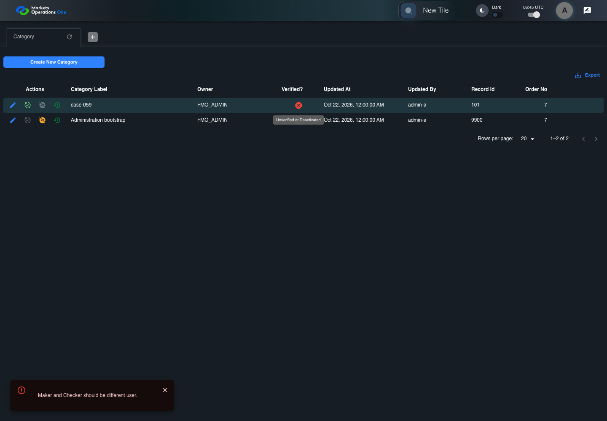

BFF-ADM-059 current BFF administration through actual UI
PASS · application/run-072/bff-adm-059-current-bff-administration-through-actual-ui-97c4a12665db-attempt-1 · ACTUAL_APPLICATION_LOCAL_SERVICES
Actual current React and exact-current BFF admin controllers/services/JPA with actual migration DDL in disposable PostgreSQL. Controlled OUD/EMS2 identities and local Spring bootstrap. Fixture SQL seeds/mutates isolated records; service errors are actual database errors. Undefined agreed messages remain unresolved acceptance.
2026-10-22T06:45:08.856Z to 2026-10-22T06:45:14.524Z
Assertions and result · Artifact manifest · Exact run inputs and source hashes
Result SHA-256:caabf92e0213377b27f2bd28c7f2ec104f170c87ca77a09e4ab3fc7e2502597cMachine observations
- actual-identity-projection.json
f13f319e83fcaa25907c0ec2d0d025b8bfd373e2270bf7d239004a636fdf046d - baseline-inputs.json
082053950481bf0443c6cdb40cd945132c5e5696b43cf7ebe1b3a62611a37974 - bff-boundary.json
4adb939cc7971c869eb1b2f3824fbc3900a2b1965378b91c1376e0e79028952b - committed-ui-submission-comparisons.json
545fe49e36d556725525e4e931c7b010fa1f268d5de01d1758a2072783f5a7f6 - fixture-step-4.json
665364a9a679cfd974a68f909a21c6d33a66b2c1b431e09a5bbe12e797e640c8 - initial-persisted-records.json
9fac24c5f2b01ee250fc44b63399f81f35ec8d7d8368e4d3a29f733d9215043b - persisted-after-submit.json
8dab472de5ae5d6f2bda17bf8874c239f60696d5a86df25cffd36230dbb6871b - ui-origin-bff-requests.json
007c5fc07ae312871ef2a86968fcdef486dd1e8b0a0765b9330c0efaac8eb873
Screenshot capture: CAPTURED. Named frames: 13.
Step screenshot evidence: COMPLETE. 12/12 canonical steps have execution screenshots.
Canonical step timeline
Given Admin A uses subject "admin-a" with role "FMO_ADMIN" in an isolated authenticated browser
Execution: PASSED.1. step-01 Visible state after step 1: Given Admin A uses subject "admin-a" with role "FMO_ADMIN" in an isolated authenticated browser
2026-10-22T06:45:11.569Z · 1440×1000
Step: /Users/lushevol/code/github/ratan-release-impact/workbench/tasks/ui-test-coverage-20261022/test-cases.md:17222
SHA-256:6a8e3c984a7424418885b9acaa2ae8835b33f98d7dedf3dac30796b7458aa624And the controlled Category fixture records the initial grid rows and persisted values
Execution: PASSED.
2. step-02 Visible state after step 2: And the controlled Category fixture records the initial grid rows and persisted values
2026-10-22T06:45:11.717Z · 1440×1000
Step: /Users/lushevol/code/github/ratan-release-impact/workbench/tasks/ui-test-coverage-20261022/test-cases.md:17223
SHA-256:6a8e3c984a7424418885b9acaa2ae8835b33f98d7dedf3dac30796b7458aa624And the Category grid has record "101" owned by "FMO_ADMIN"
Execution: PASSED.
3. step-03 Visible state after step 3: And the Category grid has record "101" owned by "FMO_ADMIN"
2026-10-22T06:45:11.800Z · 1440×1000
Step: /Users/lushevol/code/github/ratan-release-impact/workbench/tasks/ui-test-coverage-20261022/test-cases.md:17224
SHA-256:6a8e3c984a7424418885b9acaa2ae8835b33f98d7dedf3dac30796b7458aa624And the baseline fixture data defines "Category Label" as "case-059"
Execution: PASSED.
4. step-04 Visible state after step 4: And the baseline fixture data defines "Category Label" as "case-059"
2026-10-22T06:45:11.883Z · 1440×1000
Step: /Users/lushevol/code/github/ratan-release-impact/workbench/tasks/ui-test-coverage-20261022/test-cases.md:17225
SHA-256:6a8e3c984a7424418885b9acaa2ae8835b33f98d7dedf3dac30796b7458aa624And Category record "101" is inactive when this browser loads its grid
Execution: PASSED.5. step-05 Visible state after step 5: And Category record "101" is inactive when this browser loads its grid
2026-10-22T06:45:11.951Z · 1440×1000
Step: /Users/lushevol/code/github/ratan-release-impact/workbench/tasks/ui-test-coverage-20261022/test-cases.md:17226
SHA-256:bc9a86ce9860290c2d4971303c8fca2624ba5d6842fd390355fdf96d7cc0549fAnd its stored "updatedBy" value is "admin-a"
Execution: PASSED.
6. step-06 Visible state after step 6: And its stored "updatedBy" value is "admin-a"
2026-10-22T06:45:12.029Z · 1440×1000
Step: /Users/lushevol/code/github/ratan-release-impact/workbench/tasks/ui-test-coverage-20261022/test-cases.md:17227
SHA-256:bc9a86ce9860290c2d4971303c8fca2624ba5d6842fd390355fdf96d7cc0549fWhen Admin A clicks the button labeled "Verify" in the Category grid row with "Record Id" "101"
Execution: PASSED.7. step-07 Visible state after step 7: When Admin A clicks the button labeled "Verify" in the Category grid row with "Record Id" "101"
2026-10-22T06:45:12.437Z · 1440×1000
Step: /Users/lushevol/code/github/ratan-release-impact/workbench/tasks/ui-test-coverage-20261022/test-cases.md:17228
SHA-256:048ea4a760f81f22941f4feba3663ba7008ab6bcafa54d823a7f76a3f457e4aeThen the dialog titled "verify ID: 101" is visible on the Category administration page
Execution: PASSED.8. step-08 Visible state after step 8: Then the dialog titled "verify ID: 101" is visible on the Category administration page
2026-10-22T06:45:12.630Z · 1440×1000
Step: /Users/lushevol/code/github/ratan-release-impact/workbench/tasks/ui-test-coverage-20261022/test-cases.md:17229
SHA-256:a11d861146007293055cb947c15bf3a454244c3a16210901c59f7a01560ee1abWhen Admin A clicks the button labeled "Verified" in dialog "verify ID: 101"
Execution: PASSED.9. step-09 Visible state after step 9: When Admin A clicks the button labeled "Verified" in dialog "verify ID: 101"
2026-10-22T06:45:13.319Z · 1440×1000
Step: /Users/lushevol/code/github/ratan-release-impact/workbench/tasks/ui-test-coverage-20261022/test-cases.md:17230
SHA-256:39e8f74d4c5cfcde00c82520400c211c943c25ff2b1561b3573dfbc7a216154eThen the alert with severity "error" in the portal snackbar contains the exact text "Maker and Checker should be different user."
Execution: PASSED.
10. step-10 Visible state after step 10: Then the alert with severity "error" in the portal snackbar contains the exact text "Maker and Checker should be different user."
2026-10-22T06:45:13.453Z · 1440×1000
Step: /Users/lushevol/code/github/ratan-release-impact/workbench/tasks/ui-test-coverage-20261022/test-cases.md:17231
SHA-256:39e8f74d4c5cfcde00c82520400c211c943c25ff2b1561b3573dfbc7a216154eAnd in the Category data grid with column "Record Id", the "Verified?" cell for Category record "101" has status tooltip "Unverified or Deactivated" on the Category administration page
Execution: PASSED.
11. step-11 Visible state after step 11: And in the Category data grid with column "Record Id", the "Verified?" cell for Category record "101" has status tooltip "Unverified or Deactivated" on the Category administration page
2026-10-22T06:45:13.810Z · 1440×1000
Step: /Users/lushevol/code/github/ratan-release-impact/workbench/tasks/ui-test-coverage-20261022/test-cases.md:17232
SHA-256:65f2ddd8da141c8d664ef63d3041cd7b8763956e562846cd9bc2a9ce70e696d7And the persisted-record readback for record "101" has "active" equal to false
Execution: PASSED.
12. step-12 Visible state after step 12: And the persisted-record readback for record "101" has "active" equal to false
2026-10-22T06:45:13.900Z · 1440×1000
Step: /Users/lushevol/code/github/ratan-release-impact/workbench/tasks/ui-test-coverage-20261022/test-cases.md:17233
SHA-256:65f2ddd8da141c8d664ef63d3041cd7b8763956e562846cd9bc2a9ce70e696d7
Additional named frames

The final visible state after the named test assertions.
2026-10-22T06:45:14.028Z · 1440×1000Step: Test source: /Users/lushevol/code/github/ratan-release-impact/workbench/e2e/audit-specs/bff-admin.spec.ts:11
SHA-256:
65f2ddd8da141c8d664ef63d3041cd7b8763956e562846cd9bc2a9ce70e696d7Screenshots establish visible state only. Assertions and traces support functional claims.